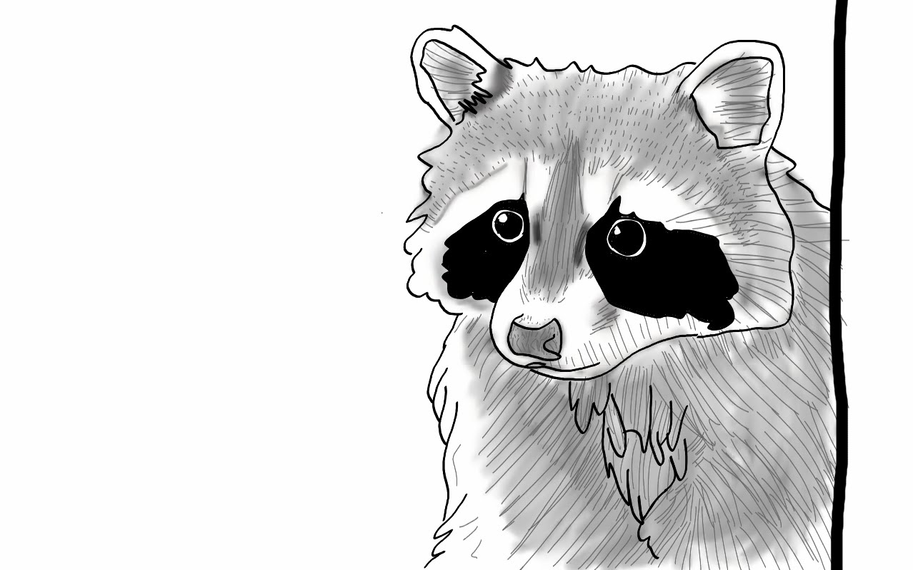

Notes on Evolutionary Computational Biology and Bioinformatics. By Leonardo de Oliveira Martins.
Here I show two small tests, one with generation of an initial set of random numbers, and another on `popcount()` speeds, implemented in the low-level phylogenetic library biomcmc-lib.
Apr 1, 2022
How the multiple sequence alignment kalign3 is implemented in the low-level phylogenetic library biomcmc-lib, and how to use colours in C.
Mar 1, 2022
Description of a current implementation of a rolling hash in the low-level phylogenetic library biomcmc-lib
Feb 1, 2022
Description of how quantile finding is implemented in the low-level phylogenetic library biomcmc-lib
Jan 1, 2022
This notebook contains a few details of how kmers are implemented in the low-level phylogenetic library biomcmc-lib.
Dec 1, 2021
I am Leo Martins, a Computational Biologist at the Quadram Institute Biosciences.
Jan 1, 2018